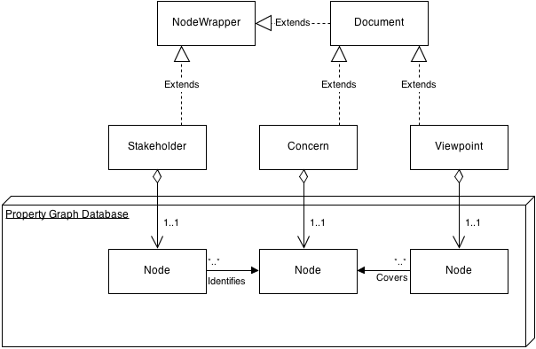

Requirements Engineering Query System
This project is maintained by dprentiss
Reqs is a proof-of-concept application that demonstrates the ability of graph- based databases to model and query complex entity-relationship concepts. In this case, an embedded database based on Neo4j is used to represent Stakeholders, Concerns, and Viewpoints as described in IEEE 1471 standard describing the architecture of a software-intensive system. Although the application at present is particular to architecture description, it is being developed with full-lifecycle, general systems in mind.
The challenge presented by this task is to capture and effectively traverse the many-to-many relationships between the entities. For this initial version of Reqs, the user is presented with a graph-based visual representation of the Stakeholders, Concerns, and Viewpoints in a hypothetical architecture description. The user can graphically select one or more entities and the system responds by highlighting the entities that are related to it.
Run:
mvn clean install
Now run:
java -jar target/reqs-1.0-jar-with-dependencies.jar
Reqs holds a single instance of a property graph database provided by Neo4j. Neo4j has three aspects that are important to the Reqs model.
A graph database has two kinds of records: Nodes and Relationships. While information can be stored in a database any number of ways, Reqs makes use of the obvious, one-to-one correspondence between entities/nodes and relationship/relationship. It also makes use of the ability to assign properties to each node and relationship. A property is simply a key/value pair such as {"age":21}.
An Index maps from Properties to either Nodes or Relationships. We are also able to use the database in a more traditional fashion. An Index keeps track of every entity by name.
A Traversal navigates the graph according to predetermined rules. Reqs uses Traversals to find out which entities are related to each other. For example, the Traversal knows to return only the Concerns identified by a Stakeholder in question, though there may be a path in the graph between him and other Concerns. The code below is the evaluator used to define the behavior of the Traversal used to identify relationships in Reqs. (from NodeWrapper.java)
public Evaluation evaluate(final Path path) {
if (path.length() == 0) {
return Evaluation.EXCLUDE_AND_CONTINUE;
}
boolean isOutgoingIS_MEMBER = (
path.lastRelationship().getEndNode() ==
path.endNode() &&
(path.lastRelationship()
.isType(ReqsDb.RelTypes.IS_MEMBER)));
boolean isRelTypeUnique = true;
Iterator<Relationship> i =
path.reverseRelationships().iterator();
i.next();
while (i.hasNext()) {
if (i.next().isType(path.lastRelationship()
.getType())) {
isRelTypeUnique = false;
break;
}
}
boolean included = isOutgoingIS_MEMBER || isRelTypeUnique;
boolean continued = included;
return Evaluation.of(included, continued);
}
For each path emanating from the node in question the Traversal evaluates where to include the path and whether to continue on the current branch.
The Node/Relationship data store plus the Traversal Framework are already useful tools for entity/relationship models. But Reqs needs for entities to have behaviors and, more generally, be represented as instances of various classes. To do this Reqs wraps each node in a class. NodeWrapper.java provides an abstract extension point for this process. Since each node has a unique ID managed by the database. Reqs passes this ID to the NodeWrapper as its sole property. As such, the node and relationships in the database represent the data associated with each entity and the NodeWrappers represent the behavior.
The ViewReqs uses JUNG to display the model to the user. In future versions, it will also provide a more complete user interface. As it stands, Reqs allows the user to pick any number of entities, and automatically displays the associated entities. That is, if the user clicks on a viewpoint, Reqs will highlight the links to the concerns it covers and the people and organizations that identified the concern. Currently, if a user clicks on an individual, Reqs will display that individuals concerns and the concerns of the organizations of which he is a member.
Future versions of Reqs will likely include these improvements.
Database editor / controller - It should be straight-forward to allow the user to add and remove entities and relationships from the view.
More Entities and Relationships - In order to capture the complexity of the system design process, Reqs will need NodeWrapper classes to represent the full set of entities and relationships, as well as the Traversals to query them.
Better and Additional Views - One major drawback of the current view is that Relationships are not labelled. Labeling them was infeasible due to the volume of relationships presented. Future versions will have better labels and the ability to hide some non-essential information.